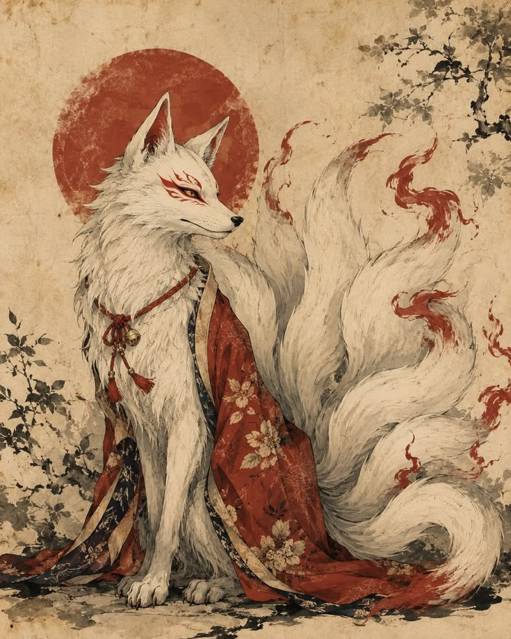
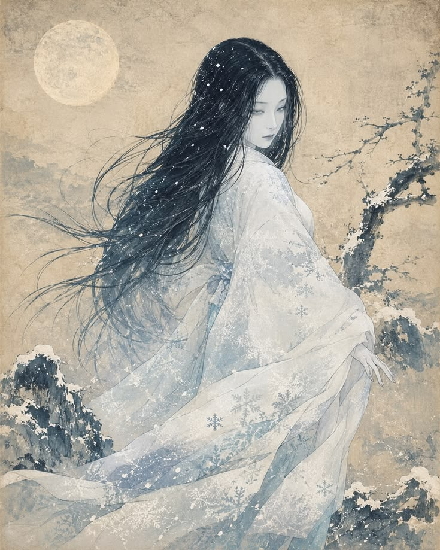
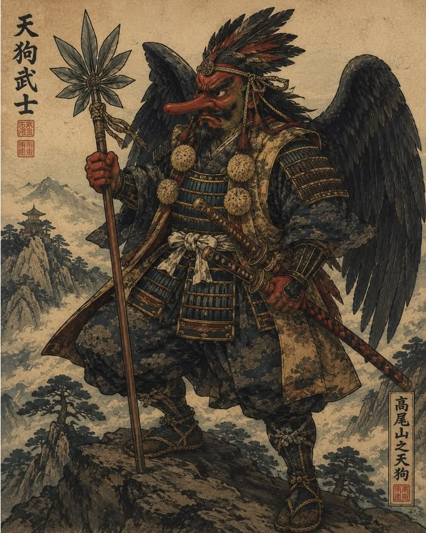

Nossos Youkais
Conheça a história de alguns dos seres que habitam o nosso mundo.

Kitsune
O kitsune é uma criatura lendária do folclore japonês, conhecida por sua inteligência, astúcia e poderes de ilusão. Dizem que,ao alcançar um grande número de caudas, torna-se ainda mais poderoso.
Apesar de sua natureza enigmática, nem todos os kitsunes são malignos. Alguns escolhem proteger aqueles que demonstram bondade e respeito, tornando-se aliados leais ao longo dos séculos.

Yuki-onna
A Yuki-onna é uma figura misteriosa do folclore japonês, associada à neve, ao frio e às noites de inverno. Geralmente descrita como uma mulher de aparência fantasmagórica.
Em algumas lendas, seu encontro representa perigo para viajantes perdidos na neve. Em outras, sua história revela um espírito solitário envolto em mistério.

Tengu
Os tengu são seres sobrenaturais ligados às montanhas e florestas do Japão. São frequentemente representados com características de aves e poderes extraordinários.
Temidos e respeitados, aparecem nas lendas como guardiões das montanhas e mestres de habilidades marciais, capazes de desafiar aqueles que invadem seu território.